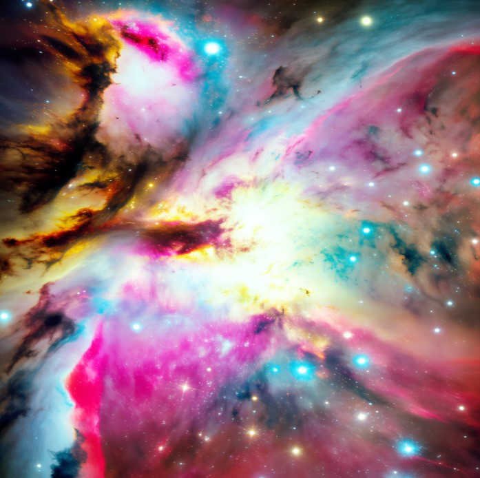

Space has a way of producing facts that sound like they were made up for a trivia night, but check out: every one of these is real, verifiable astronomy.

1. Most of the Stars You See at Night Are Already Gone (Sort Of)
Starlight takes time to travel, so when you look up, you're seeing light that left some stars hundreds or thousands of years ago. A handful of distant stars you can technically still "see" tonight have already burned out — you're watching light from a star that, in real time, no longer exists in that form.
2. There Are More Stars in the Universe Than Grains of Sand on Earth
Astronomers estimate roughly 200 billion trillion stars in the observable universe — a number that, according to multiple independent estimates from planetary scientists, exceeds the total count of grains of sand on every beach and desert on Earth combined.
3. Some Stars Are Cooler Than a Candle Flame
Brown dwarfs — failed stars that never gained enough mass to sustain full nuclear fusion — can have surface temperatures as low as a few hundred degrees Celsius. Some of the coolest known brown dwarfs are, remarkably, cooler than a household oven.
4. There's a Real Smell Associated With Space
Astronauts returning from spacewalks have consistently described a distinct smell on their suits — often compared to seared steak, hot metal, or gunpowder — caused by high-energy particles and atomic oxygen interacting with the suit material. NASA has studied this enough that it's a recognized, documented phenomenon, not an urban legend.
5. One Day on Venus Is Longer Than Its Whole Year
Venus rotates so slowly that a single day on Venus (one full rotation) takes about 243 Earth days — longer than the 225 Earth days it takes Venus to orbit the Sun. A "day" there is longer than a "year."
6. A Neutron Star Can Spin Hundreds of Times Per Second
Some neutron stars, the collapsed remnants of dead massive stars, rotate so fast that a single "day" lasts a few milliseconds. The fastest known examples spin more than 700 times per second.
7. You Can Actually Name a Real Spot in the Sky After Yourself
While the International Astronomical Union controls the official scientific naming of celestial bodies, there's a long, well-documented tradition — going back centuries — of personal star registries and digital star maps where ordinary people name a point in the sky after themselves or someone they care about, for sentimental rather than scientific purposes.
Putting Your Own Name Among the Real Ones
If facts like these make you want a more personal connection to all that vastness, services like GalaxySpace let you do exactly that — claim a digital star, attach your name and a message, and have a small, permanent point of your own in a universe full of genuinely unbelievable facts.
You can claim yours here — no astrophysics degree required, just a name and a few words.